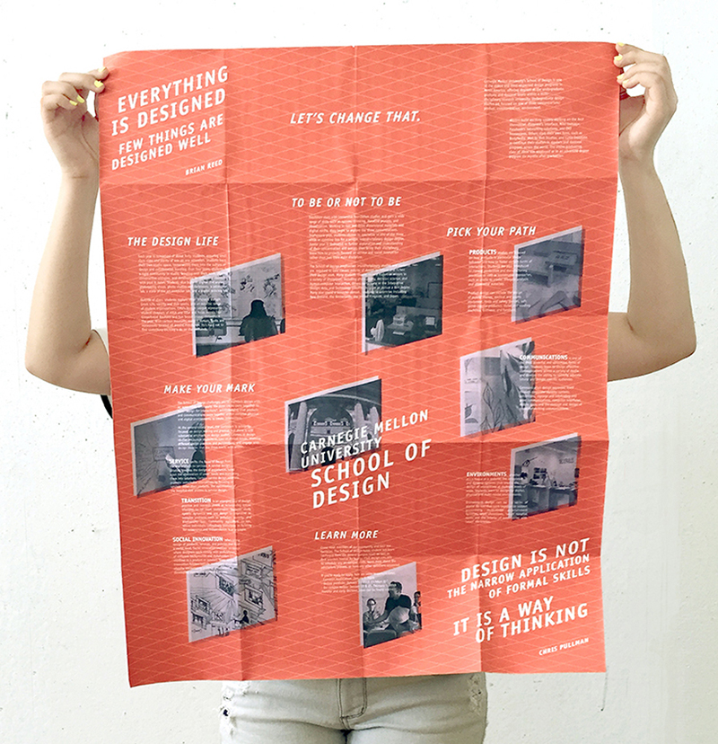
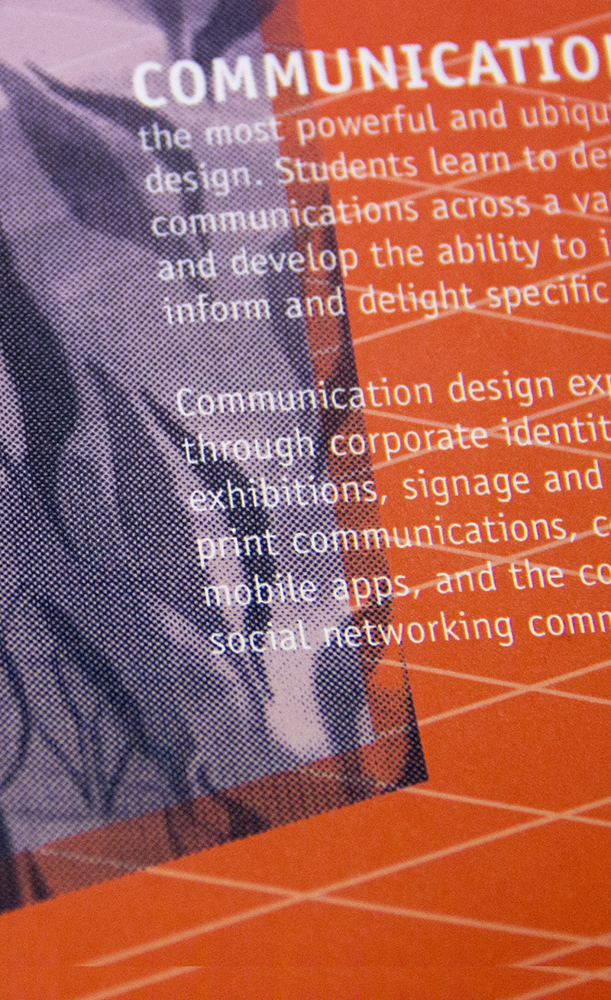
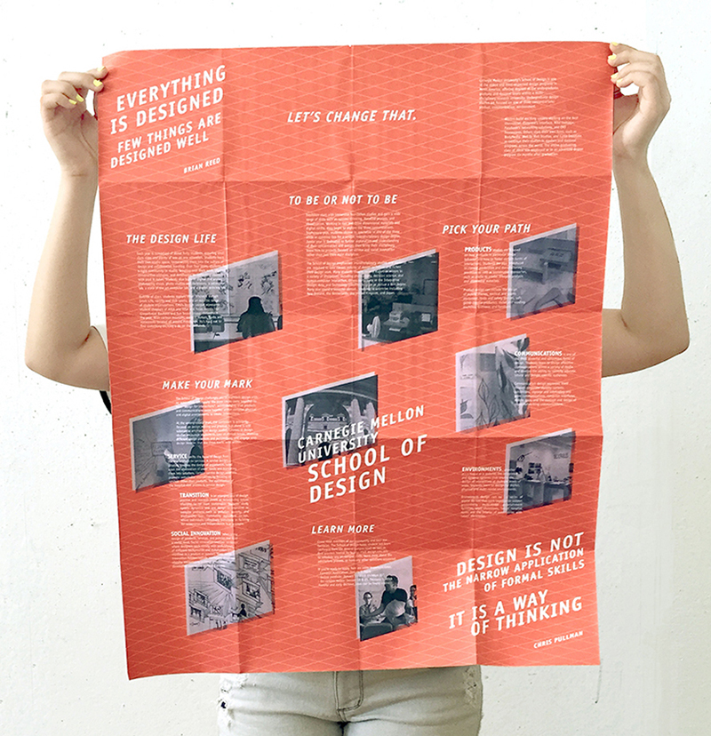
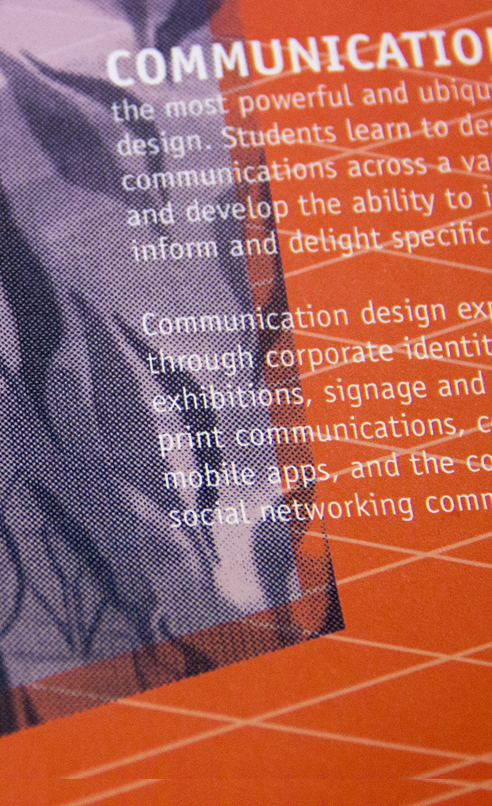

various print projects of various scales
a foldable mailable pamphlet for the school of design meant to give prospective students a general overview of the design program at cmu and what sets it apart from other schools. a limited color scheme, the use of officina sans, and half toned images all accomodate the quality of newsprint.
 





development of narrative and content focused on sharing the school's values
exercises in hierarchy, type, color, and image


iterations

a visual biography of alisa